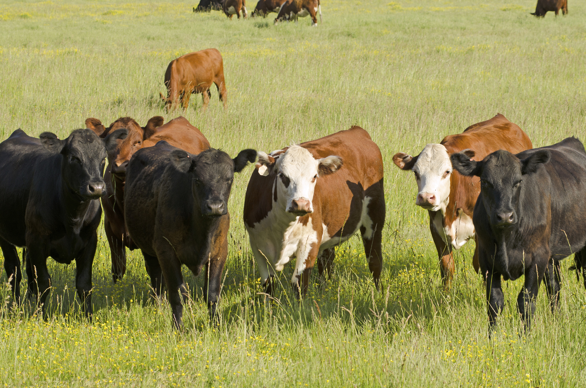
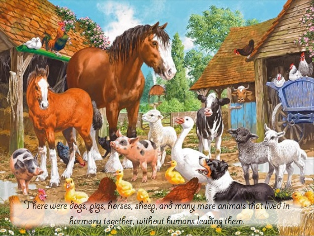

- Stockholm
-

- This was taken in Gamla Stan (Old Town) in a large square of amazing buildings.
- Gamla Uppsala
-

- The first three Swedish kings are buried here, under ancient burial mounds.
- Perpetual Sun
-
- During the summer months, the sun takes forever to go down. This is a good thing.